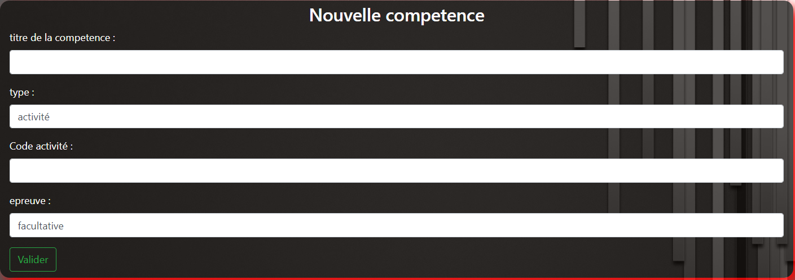

Compétence¶
Liste des compétences¶
Vous devez être connecté pour pouvoir affiché la liste des compétences
Il y a deux tableau de compétences pour chaque liste de compétences, un tableau qui contient les compétences obligatoire, ainsi qu’un deuxième tableau qui contient les compétences facultative.
- Pour les tuteurs, la liste des compétences est affiché en dessous du tableau des compétences de l’apprenti.
A partir du menu d’accueil, il y a possibilité d’accéder à la liste des compétences via “Liste des compétences”.
- Pour les visiteurs, utilisateurs ainsi que les administrateurs, le tableau des compétences sera alors affiché, avec une icone qui indiquera si oui ou non, la compétences est validé grâce aux tâches.
Création de compétences¶
Seul les administrateurs peuvent créer des compétences
Pour créer une compétence, il est nécessaire d’être connecté en tant qu’administrateur
Sur la page d’accueil, il y a “Creation compétence” qui permet d’affiché un formulaire de création de compétence.
